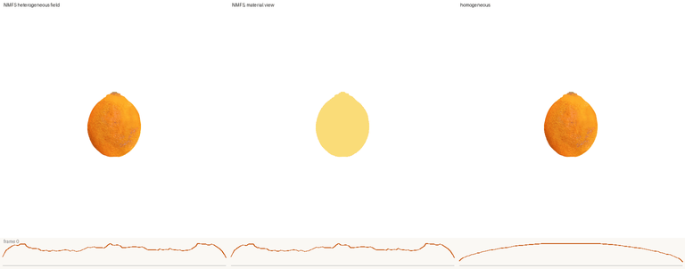

phy_inside: Heterogeneous Material Fields for Cuttable Generated Solids
從幾張切面照片，到皮、果肉、纖維各有各的物理的可切割數位孿生資產
Fruit3D Fusion → phy_inside · 所有數字為實際量測，未做的部分明寫
同一顆 3DFusion 橘子、同樣三刀、同一 MPM solver，只有材質場不同。由左到右：我們的異質場、其材質視圖（皮黃、果肉橘、纖維藍）、同質材質（等於 part 級方法對單 part 橘子的輸出）、GaussianFluent 的顏色規則。每欄下方是該場的切削力曲線：同質與顏色規則是一條弧，我們的場有皮的進出雙峰。
Abstract
生成的 3D 資產止於表面：image-to-3D 模型在外表面輸出完整 PBR 材質，內部生成方法只把體積填成顏色，物理感知的管線則給每個 part 一組均勻參數，於是一顆橘子對所有現有方法而言都是單一物質。我們把一個由少量切面照片合成的內部體積，變成異質、可模擬的實心體。材質清單在真實切面照片上學到（3+3 張，對六顆沒看過的橘子轉移一致性 0.93），經虛擬切片反投影成偽標籤；一個定義在圓柱格上的神經材質場（NMFS）在沒有任何 3D 標籤的情況下，以偽標籤交叉熵、兩族切面一致性、各向異性解剖先驗與夾雜物 head 學出每個 cell 的物質。每種物質綁定力學參數並寫回資產的每個 voxel，切割是格上的拓撲事件，碎片各自帶著材質。在同一顆橘子、同一 solver 上，異質場產生皮的進出雙峰切削力曲線，落地時整體變形較小、內部被皮屏蔽；按顏色指派材質的規則在橘子上找不到皮，因為外皮與果肉同色。
Generated 3D assets stop at the surface. We turn a volumetric interior synthesised from a few cross-section photographs into a heterogeneous, simulation-ready solid: the material inventory is learned on real cut photographs, back-projected as pseudo-labels, and a neural material field on the cylindrical lattice is trained with no 3D labels. Every voxel of the asset carries its substance, so a planar cut is a topological event and every fragment keeps its material.
Architecture 照片 → 2D 材質 → 3D 神經材質場 → 帶材質的 voxel 資產 → 物理與光學
三個設計決定各對應一個先量到的事實：材質清單在真實照片上學（顏色在個體間不轉移、DINOv2 才分得出中柱）；2D→3D 不做機率乘積提升（資產本身跨切面一致，45° 斜切無接縫）；shell cell 直接定為皮（分類器的 core 只到 r≈0.8）。
I. 真實照片學材質，投到資產 Stage 1

上兩列：六張訓練照片與六張 held-out 照片，用訓練照片學到的 K=3 分類器標記；十二顆不同的橘子，標籤在解剖上一致。下兩列：3DFusion 資產的橫切、縱切、45° 斜切，同一個分類器經虛擬切片反投影標記。K=3 對 held-out 的 Hungarian 一致性 0.93，K=4 掉到 0.61。

為什麼不能只用顏色：LAB 把外皮與中柱歸成同一群（兩者都是淡色），DINOv2 把中柱穩定分出來。這正是力學上最要命的混淆。

資產自帶一致性：45° 斜切從未被任何一族監督，卻與橫切、縱切一致，所以不需要 2D→3D 的機率乘積提升。
II. NMFS 神經材質場 Stage 2 · 沒有一張 3D 標籤

由上而下：照片分類器的 argmax、GMM+MRF 基線、NMFS 最終標籤、夾雜物 head 的機率。橫切的放射狀囊瓣膜在 MRF 被抹掉，NMFS 由夾雜物 head 補回。
| 指標（橘子） | 分類器 | GMM + MRF | NMFS |
|---|---|---|---|
| 在非信心 cell 上與 held-out 驗證過的分類器一致 | — | 0.67 | 0.84 |
| 核心區外的纖維組織（囊瓣膜的保留） | 0.122 | 0.078 | 0.123 |
| 兩族不一致（診斷，共用 head 所以被建構為一致） | 0.187 | 0.188 | 0.001 |
| 斜切變化率 / 橫切變化率（無接縫） | — | 0.033 / 0.043 | 0.052 / 0.069 |
| 訓練時間 | — | 秒級 | 265 s |
偽標籤只用了信心高的 cell，其餘 cell 從未進過交叉熵；NMFS 在它們上與分類器的一致由 0.67 升到 0.84，是「學到了東西」的證據。0.001 要打折讀：兩個 head 共用類別層又被 KL 拉在一起。
III. 材質寫進每個 voxel 切割時碎片帶著材質

材質場的三個切面：後驗 argmax → MRF 與 shell 規則 → 果肉內的連續調變 t（近中柱低、近皮高）。
| 檔案 | 內容 | 用途 |
|---|---|---|
orange_phy.ply | 3DFusion 資產 + 每 cell 三個屬性 mat_label / mat_E / mat_t | 任何按名字讀欄位的載入器直接可用；現有 3DGS 載入器不受影響 |
orange_phy_material.pt | 同順序的 labels、E、t | 切割管線讀 labels，每個 cell 進 solver 帶自己的 E, ν, ρ |
orange_phy_matview.ply | 同幾何，f_dc 換成類別顏色 | 「材質視圖」：同一個物理過程用材質上色 |
皮 656,761 個 cell（含 480,287 個 shell cell）、果肉 341,239、纖維 164,387；E 由 fruit 類別範圍 2e5–8e6 Pa 給定，明寫為假設。切割是連通元件，cell 不刪不搬，碎片天然帶材質。
IV. Qualitative Comparison 同一顆橘子、同一 solver，只有材質場不同
NMFS · NMFS 材質視圖 · 同質 · 顏色規則。對手的共同缺點是只有一種材質：切到哪裡力曲線都是同一條弧，切下去沒有軟硬之分。材質視圖顯示皮、果肉、纖維各自跟著碎片走。

切成兩半後從 1.3 的高度落下：NMFS · 材質視圖 · 同質。

四種材質場的切削力曲線形狀（相對 τ：皮 1.0、纖維 0.5、果肉 0.15）。NMFS 與 MRF 有皮的進出雙峰（0.98 / 0.85）與低的果肉平台；同質是弦長的弧；顏色規則在橘子上找不到皮，外皮與果肉同色，曲線幾乎就是同質的弧。這是對場的確定性積分，不依賴模擬。

整顆不切的落地（FruitNinja lattice）：NMFS 第一次落地皮的最小伸展比 0.973 對同質 0.951，內部 0.979 對 0.958；硬皮讓整顆變形少一半、彈得更快，內部被皮屏蔽。
V. 跟誰比、比什麼 對手的程式碼全部確認可取得
| 軸 | 對手 | 它們的內部 | 指標 | 預期 |
|---|---|---|---|---|
| 內部有沒有材質 | FruitNinja、GaussianFluent 填充、3DFusion | 烘焙顏色 | 重光照 LPIPS | 換光源即失效 |
| part 級物理預測 | PhysX-Anything、PhysX-Omni、VoMP、Pixie、NeRF2Physics | 單 part 橘子 = 一種材質 | 真實斜切的類別面積比 KL；力曲線形狀 | 皮佔比 0 或 100%，曲線是弧 |
| 顏色指派 | GaussianFluent 規則（自動化）+ 其 solver 跑其西瓜 | 皮肉同色時失效 | 同上 | 橘子找不到皮；西瓜平手（主動報告） |
| 光學估計 | RGB↔X、SuperMat、IntrinsicAnything | 逐像素，無每類約束 | 同一面漫射→閃光的重渲染 | 濕高光被烘進 albedo |
可守的宣稱只有兩層：part 內的異質性（現有方法沒有一個讓 part 內部變化），以及監督來自內部觀測。不宣稱逐 voxel 材質是新的（VoMP、Pixie 都輸出逐 voxel）、不宣稱絕對模數、不宣稱輸入未標定。細節與每篇的粒度查證見完整分析。
Limitations
- 材質場繼承生成體積的瑕疵（橘子資產極區偏白被標成纖維、底部缺口成為場裡的洞）；上游越好，材質場越對。
- E、ν 來自類別範圍，不是預測；預測的是「哪種物質在哪裡」，力學是示範，沒有實體量測。
- 圓柱先驗需要一個軸；夾雜物一個 cell 厚；目前只有橘子，其餘物件的 3DFusion 圓柱體待重跑；光學擬合與新拍攝待做。
BibTeX
@misc{phy_inside2026,
title = {phy\_inside: Heterogeneous Material Fields for Cuttable Generated Solids from Cross-Section Photographs},
author = {Gino},
year = {2026},
note = {Project page: https://gino6178.github.io/phy_inside/}
}